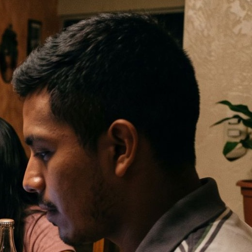
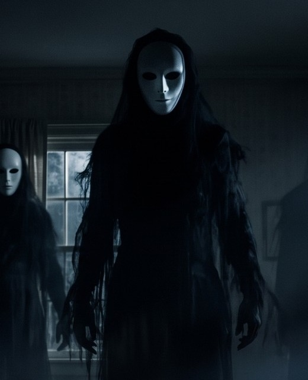
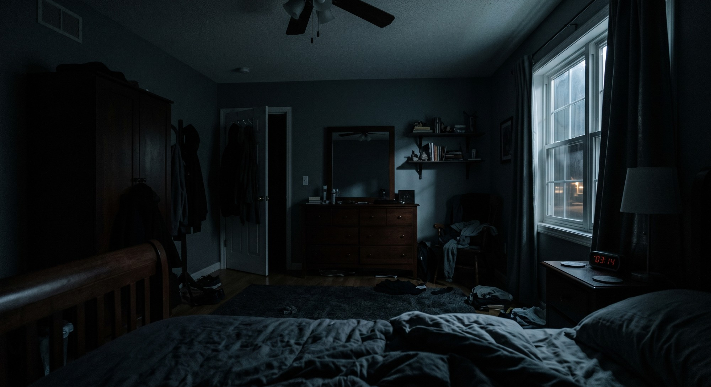
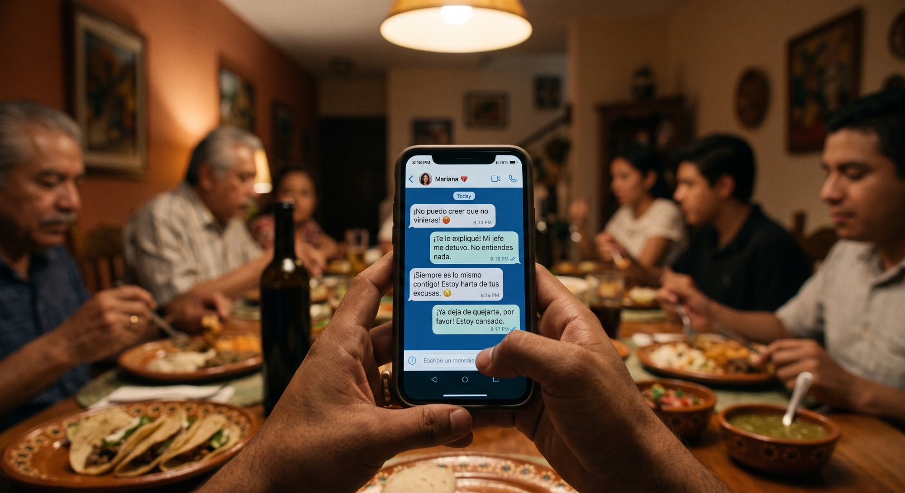
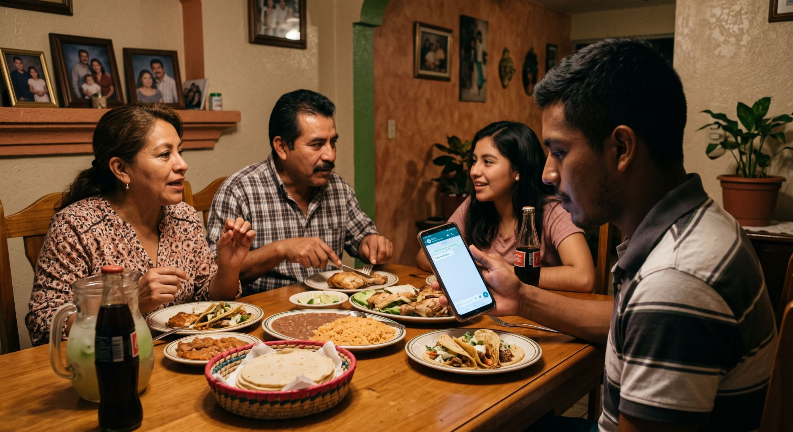
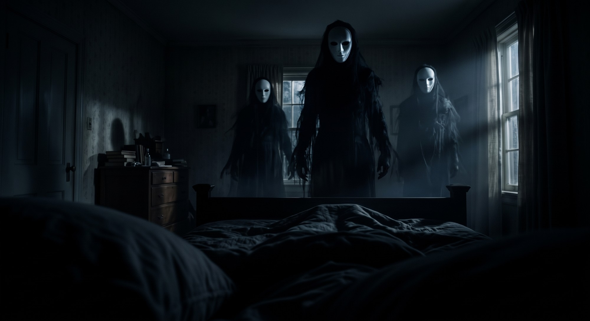

Alex, de 22 años, cena con su familia pero tiene la cabeza en una pelea con su novia. Esa noche, paralizado en su cama, tres figuras con máscaras blancas lo rodean. A la mañana siguiente descubre en su brazo una incisión con suturas perfectas: no fue un sueño.
Planos
20
Keyframes
11
Montaje
1:50
Generación
154 s por pasada160 s por pasada
Formato
16:9
Avance
0/20 planos · 0/11 keyframes
Montaje
Cada bloque es un plano, a escala de lo que dura en el corte final y con el color de su luz. Toca uno para ir a su prompt.
Abre la app de Gemini o Google Flow y elige Gemini Omni, en formato 16:9.
En la app de Gemini abre un chat nuevo, elige formato 16:9, adjunta los recortes de elements/ y pega el prompt maestro. En Flow no hace falta.
Genera los keyframes K0–K10 con Gemini (imágenes), adjuntando las referencias en el orden de cada prompt, y descárgalos.
Genera los planos en orden: adjunta las imágenes de «Adjunta», en ese orden, y pega el prompt de Omni.
Si una toma sale casi bien, pide un arreglo rápido en lugar de regenerarla.
Descarga cada toma con su ID (1A.mp4, 1B.mp4…) y arma el corte con herramientas/armar_corte.py o en CapCut.
Sube las 5 referencias a Kling y crea los Elements «Alex» y «Figura» con los recortes de la carpeta elements/.
Genera los keyframes K0–K10 (imágenes 16:9) y revisa la lista de continuidad.
Genera los planos escena por escena: primero un borrador en modo rápido y luego la toma final.
Elige la mejor toma de cada plano y guárdala con su ID (por ejemplo 3A_v2.mp4).
Graba o genera las voces y junta los efectos de sonido de cada escena.
Monta en CapCut o DaVinci Resolve siguiendo la línea de tiempo y postproduccion.md.
Ajustes en Gemini Omni
Dónde
App de Gemini (crear video con Gemini Omni) o Google Flow con el modelo Gemini Omni Flash. Necesitas Google AI Plus, Pro o Ultra.
Formato
16:9. Elígelo en la configuración de la app o de Flow antes de generar: si solo lo pides en el prompt, puede salir vertical (9:16).
Duración
3, 5 o 10 s por clip, según «Clip». Omni puede extender hasta 40 s, pero aquí cada plano cabe en un clip.
Primer cuadro
Adjunta la imagen que indica «Adjunta»: el prompt le dice a Omni que es el cuadro inicial exacto. Si la app de Gemini no la respeta (cambia la familia o el cuarto), usa Flow: «Frames to Video» → «+ Add start frame».
Último cuadro
Solo en 2B (ref. 01 → K2). En Flow: «+ Add end frame».
Personajes
Los recortes de Alex y de la figura van solo con el prompt maestro. No los adjuntes en cada plano: Omni los convierte en un plano extra al inicio. Adjunta solo los cuadros que indica «Adjunta».
Audio
Omni genera el sonido junto con la imagen. Cada prompt ya trae su audio y los diálogos en español, sin música: la música va en la edición.
Arreglos
Si una toma sale casi bien, no la regeneres: pide un solo cambio por mensaje.
Límites
Tu plan tiene un límite diario de videos. Con 20 planos y reintentos puede tomarte más de un día.
Ajustes en Kling
Modelo
Kling 3.0 o la versión más reciente de tu plan. Borradores en modo rápido (Turbo o Estándar); tomas finales en Pro o alta calidad.
Proporción
16:9. Tus referencias ya vienen en horizontal.
Modo
Imagen a video con fotograma inicial en todos los planos. Fotograma final solo en 2B.
Duración
La que marca «Genera» (5 o 10 s). Kling 3.0 llega a 15 s, pero los clips cortos se deforman menos.
Elements
«Alex» y «Figura», en los planos que los indican, si tu versión permite combinarlos con el fotograma inicial. Si no, manda el fotograma inicial.
Idioma
Prompts en inglés, que Kling sigue mejor. Los diálogos van en español, entre comillas.
Audio nativo
Apagado por defecto: el sonido se arma en la edición. Enciéndelo solo en 1A–1C si quieres que Kling genere las voces en español.
Negative prompt
Pégalo cuando tu versión muestre el campo.
Multi-shot
Opcional en Kling 3.0: agrupa planos de una misma escena (hasta 6) pegando cada prompt como un plano.
Intentos
Calcula 2 o 3 generaciones por plano. Una pasada completa son unos 160 s de video.
Prompt maestro
Pégalo en un chat nuevo de la app de Gemini con los dos recortes de abajo adjuntos: primero Alex, luego la figura. En Flow no hace falta.
Prompt maestro
Vamos a producir, plano por plano, un cortometraje de terror de 1:50 llamado «La Incisión». Formato 16:9, look cinematográfico fotorrealista: lente de 35 mm, poca profundidad de campo y grano de película.
Historia: Alex, de 22 años, cena con su familia pero tiene la cabeza en una pelea con su novia. Esa noche, paralizado en su cama, tres figuras con máscaras blancas lo rodean. A la mañana siguiente descubre en su antebrazo izquierdo una incisión con suturas perfectas: no fue un sueño.
Personajes:
- Alex: 22 años, mexicano, piel morena, cabello negro corto con los lados degradados, bigote delgado y ojeras. En la cena usa una polo blanca con rayas grises; de noche y en el desayuno, una playera gris lisa. La primera imagen adjunta es su rostro.
- Su familia: mamá (unos 50 años, blusa estampada), papá (unos 55, bigote, camisa a cuadros) y hermana (unos 19, playera rosa).
- Las tres figuras: altísimas y delgadas, de tela negra desgarrada, cabello negro largo y máscaras blancas de porcelana con cuencas negras. Nunca caminan: se deslizan. Nunca hacen ruido. La segunda imagen adjunta es una de ellas.
Reglas para cada video:
1. Te mandaré cada plano con su ID (1A, 1B…), su duración y su prompt en inglés. Genera solo ese plano y espera el siguiente.
2. La imagen que adjunte en cada plano es su cuadro inicial exacto: empieza ahí, en un solo plano continuo, sin cortes y con las mismas personas y el mismo lugar.
3. Sigue el prompt al pie de la letra: una sola acción por plano y cámara fija cuando lo pida.
4. Sin subtítulos ni texto en pantalla. Diálogos en español con acento mexicano y labios sincronizados. Sin música.
5. Mantén a Alex, la familia y las figuras idénticos en todos los planos.
6. Si te pido un cambio, cambia solo eso y deja todo lo demás igual.
Si entendiste, responde solo «Listo».
Arreglos rápidos
Si una toma sale casi bien, escribe el arreglo en el mismo chat en vez de regenerarla. Un cambio por mensaje.
Salió vertical
No se arregla con un mensaje: cambia el formato a 16:9 en la configuración y genera de nuevo.
Hizo cortes o empezó con otro plano
Deja todo igual, pero que sea un solo plano continuo, sin cortes, que empiece exactamente en la imagen adjunta.
Cambió la familia o el cuarto
Usa exactamente las personas y el cuarto de la imagen adjunta, sin cambiar a nadie.
Se movió la cámara
Deja todo igual, pero la cámara no debe moverse en absoluto.
El movimiento es muy rápido
Deja todo igual y haz el movimiento el doble de lento.
Salió texto o subtítulos
Deja todo igual y quita todo el texto y los subtítulos.
Cambió la cara de Alex
Deja todo igual, pero la cara de Alex debe ser idéntica a la imagen de referencia.
Quedó muy iluminado
Deja todo igual, pero más oscuro: solo luz de luna azul y fría por la ventana.
Las figuras caminan
Deja todo igual, pero las figuras no mueven las piernas: se deslizan flotando.
Salió el brazo derecho
Deja todo igual, pero tiene que ser el antebrazo izquierdo.
Metió música
Deja todo igual y quita la música; deja solo el sonido ambiente.
La voz no suena mexicana
Deja todo igual y que la voz tenga un acento mexicano natural.
Repitió el diálogo
Deja todo igual y que diga la línea una sola vez.
Referencias de personaje
En Kling son Elements. En Gemini Omni se adjuntan como referencia; en Flow, como ingredientes.

Alex
Recorte del rostro de Alex (ref. 04) + la hoja de personaje K0. La ref. solo lo muestra de perfil; K0 le da a Kling su cara de frente.
Úsalo en 1A, 1C, 2C, 3B, 5E, 6A, 6B y los insertos del brazo (3C, 5D, 6C) para mantener el tono de piel.

Figura
Recorte de la figura central de la ref. 05: máscara, cabello y tela negra desgarrada.
Úsalo en 2B, 2D, 3A, 5B y 5C.
Tus referencias

01 · Habitación de Alex, noche
POV desde la cama: ventilador de techo, ropero, puerta entreabierta, cómoda con espejo, ventana con farola y reloj rojo en 03:14.
2A, 2B (inicio), 5F · base de K2, K4 y K6
02 · El recuerdo en el parque
La abuela, papá y mamá jóvenes, la niña de vestido amarillo y el niño en hombros (Alex de niño), en hora dorada.
4A

03 · POV del chat con Mariana
Las manos de Alex con el celular en la cena y la pelea con Mariana en pantalla.
1B · base de K1

04 · La cena familiar
Mamá, papá, hermana y Alex (polo a rayas) en el comedor. En su celular se lee «Todo está bien».
1A · base de K0, K7 y K10

05 · Las tres figuras
Figuras altas de tela negra y cabello largo con máscaras blancas. La habitación no es la de la ref. 01 (ver continuidad).
5B · Element «Figura» · base de K2, K4 y K5
Continuidad
Lo que no cuadra entre tus referencias y el guion, y cómo resolverlo antes de gastar créditos.
Corrige
La ref. 05 es otra habitación. Tiene papel tapiz, dos ventanas y la cómoda a la izquierda; no coincide con la ref. 01. Usa la 05 solo para las figuras y genera K2 y K4 sobre la habitación de la ref. 01.
Corrige
La ref. 03 no coincide con la ref. 04. Al fondo hay otra familia (dos señores mayores y más gente), el celular tiene funda dorada y la pantalla mezcla la muesca de iPhone con botones de Android. Con el fondo muy desenfocado pasa; para ir a lo seguro, usa la ruta pro con K1.
Decide
Máscaras con o sin facciones. El guion dice «lisa, sin facciones»; en la ref. 05 tienen cuencas negras y rasgos suaves. Los prompts usan «smooth white porcelain masks with hollow black eyes». Para seguir el guion al pie de la letra, cambia esa frase por «completely featureless white masks, no eyes, no mouth» en todos los prompts.
Revisa
Brazo izquierdo. Los generadores suelen invertir izquierda y derecha. En K5, K9, 3C, 5D y 6C confirma que sea el izquierdo; si no, voltea la imagen horizontalmente antes de animarla.
Revisa
Vestuario de Alex. Polo blanca con rayas grises solo en la escena 1. Playera gris lisa de manga corta en la noche y en el desayuno, para que el antebrazo se vea en la escena 6.
Nota
Anillo en la ref. 03. Las manos llevan un anillo que se lee como de matrimonio, y Alex tiene 22 años y novia. Quítalo en K1 o ignóralo.
Nota
Celular sobre la mesa. El guion dice «debajo de la mesa», pero en las refs 03 y 04 está sobre la mesa. No cambia la historia.
Nota
El recuerdo es el pasado. En la ref. 02 los papás son más jóvenes (el papá sin bigote) y aparece la abuela: léelo como la infancia de Alex, con él de niño en los hombros de su papá. El papá usa una polo a rayas, como Alex en la cena.
Nota
El reloj marca 03:14. Se ve en la ref. 01 y en todo lo que salga de ella. Mantén esa hora en las escenas 2, 3 y 5, o usa la idea del «tiempo perdido» de la biblia visual.
Keyframes
Las imágenes que faltan para animar los planos. Genéralas antes que los videos, en 16:9. «The first/second reference image» son las imágenes que subes, en ese orden.
K0
Hoja de personaje de Alex
Recorte «Alex»
Se usa en
Element «Alex»
Cómo
Imagen con referencia de rostro o personaje: sube elements/alex-rostro.jpg.
Prompt de imagen
Character reference sheet of the young man in the reference image: a 22-year-old Mexican man with brown skin, short black hair with faded sides, a thin mustache and light stubble, tired eyes with dark circles, slim build. Three views side by side in one image: front, three-quarter and profile, neutral expression, wearing a plain heather-gray crew-neck t-shirt, neutral gray studio background, soft even lighting. Photorealistic, detailed skin texture, the same face in all three views.
Nota. Úsala con el recorte como referencia de Alex (Element en Kling, ingrediente en Flow). Si la cara de frente no se parece, genera varias y quédate con la más fiel al perfil.
K1
Celular con pantalla verde (ruta pro)
Opcional
Ref. 03
Se usa en
1B (inicio, ruta pro)
Cómo
Edición de imagen sobre la ref. 03.
Prompt de imagen
Edit the reference image: replace everything on the phone screen with a flat, evenly lit, solid bright green screen (#00FF00) with no interface, no text and no reflections, and remove the ring from the finger. Keep the hands, the phone, the dinner table, the blurred family in the background and the warm lighting exactly the same.
Nota. Solo si vas a meter el chat real en la edición (croma + seguimiento). Así el texto se lee perfecto y puedes empezar en «Todo está bien» antes de la pelea.
K2
La habitación con las tres figuras
Ref. 01Ref. 05
Se usa en
2B (fin) · 2D (inicio)
Cómo
Edición con dos referencias: la ref. 01 como imagen base y la ref. 05 para las figuras.
Prompt de imagen
Keep the dark bedroom from the first reference image exactly as it is: same camera angle from the bed, same wardrobe, half-open door, dresser with mirror, wall shelves, window with the streetlight and the red digital clock. Add the three tall, thin figures from the second reference image, standing in the far corner between the half-open door and the dresser and silently facing the bed: long bodies of tattered black cloth, long black hair and smooth white porcelain masks with hollow black eyes. They are partly swallowed by the shadows. Cold blue moonlight, deep black shadows, photorealistic horror film still, heavy film grain, 16:9.
Nota. Este cuadro y la ref. 01 deben tener el mismo encuadre: son el inicio y el fin de 2B.
Imagen con el Element o la referencia de personaje de Alex.
Prompt de imagen
Close-up of the young man from the reference, a 22-year-old Mexican man with brown skin, short black hair and a thin mustache, lying on his back in bed with his head on a dark gray pillow, wearing a plain gray t-shirt. His eyes are wide open in terror, his body is frozen and there is a thin layer of sweat on his forehead. Lit only by cold blue moonlight from a window, deep black shadows. Photorealistic horror film still, 35mm, shallow depth of field, film grain, 16:9.
K4
POV al techo: las máscaras encima
Ref. 01Ref. 05
Se usa en
3A · 5C
Cómo
Imagen con dos referencias: la ref. 01 (ventilador y ambiente) y la ref. 05 (figuras).
Prompt de imagen
First-person point of view lying on the back in bed, looking straight up at a dark bedroom ceiling with a dark wooden ceiling fan with white glass shades, like the fan in the first reference. Three smooth white porcelain masks with hollow black eyes, like the figures in the second reference, lean over the viewer from above, very close to the camera, filling most of the frame. Their long black hair hangs down toward the lens and their dark bodies merge with the darkness. Cold blue moonlight, deep black shadows, photorealistic horror film still, wide-angle lens, heavy film grain, 16:9.
K5
El antebrazo y la mano oscura
Recorte «Alex»Ref. 05
Se usa en
3C · 5D
Cómo
Imagen con referencia de piel (Alex) y de las figuras (ref. 05).
Prompt de imagen
Close-up of a young Mexican man's left forearm with brown skin, resting palm up on a dark gray bed sheet at night, the sleeve of a gray t-shirt visible at the edge of the frame. From the darkness at the top of the frame, a long, thin, black shadowy hand with unnaturally long fingers reaches toward the inside of the forearm, almost touching it. Cold blue moonlight, deep black shadows, photorealistic horror film still, macro lens, heavy film grain, 16:9.
Nota. Revisa que sea el brazo IZQUIERDO. Si sale el derecho, voltea la imagen horizontalmente.
K6
Alex acostado (plano medio)
Recorte «Alex»Ref. 01
Se usa en
5E
Cómo
Imagen con el Element de Alex y la ref. 01 como referencia de la habitación.
Prompt de imagen
Medium side shot of the young man from the reference, a 22-year-old Mexican man with brown skin, short black hair and a thin mustache, wearing a plain gray t-shirt, lying on his back in a dark wooden sleigh bed with dark gray bedding, in the same dark bedroom as the second reference. His eyes are closed, he looks restless and there is sweat on his face. Cold blue moonlight from the window, ceiling fan above, dark wooden furniture. Photorealistic horror film still, 35mm, film grain, 16:9.
K7
El comedor en la mañana
Ref. 04Recorte «Alex»
Se usa en
6A · referencia de luz para K8 y K9
Cómo
Edición de la ref. 04 (mismo comedor) con el Element de Alex.
Prompt de imagen
The same Mexican dining room as the reference image, with the same textured walls, framed family photos, green arch and plants, but now in the morning with soft natural daylight coming through a window. The table is clean and all the other chairs are empty. The young man from the reference, now wearing a plain gray t-shirt, sits alone at the center of the table, pale and exhausted, in front of a clay plate of red chilaquiles with cream, crumbled fresh cheese and sliced onion, next to a cup of coffee. Neutral, slightly desaturated colors, quiet atmosphere, photorealistic 35mm film still, 16:9.
Imagen con el Element de Alex; usa K7 como referencia de luz y fondo.
Prompt de imagen
Close-up of the young man from the reference, a pale, exhausted 22-year-old Mexican man with brown skin, short black hair and a thin mustache, wearing a plain gray t-shirt, sitting at a wooden dining table in soft morning daylight. He stares blankly into nothing, with dark circles under his eyes. A textured wall with framed family photos is blurred in the background. Photorealistic, 35mm, shallow depth of field, film grain, 16:9.
Imagen con referencia de piel (Alex) y K7 para la luz de la mañana.
Prompt de imagen
Close-up of a young Mexican man's left forearm with brown skin, held up in soft morning daylight with the inside of the forearm facing the camera. A long, straight, fresh surgical incision runs along the forearm, slightly reddened and swollen, closed with neat, perfectly spaced black surgical stitches. Clinical and precise, no blood. A plate of chilaquiles on a wooden table is blurred in the background. Photorealistic, 50mm macro, shallow depth of field, realistic skin texture, 16:9.
Nota. Deja «clinical» y «no blood» para no activar el filtro de contenido. Brazo IZQUIERDO.
K10
Alex en la cena (plano medio corto)
Ref. 04
Se usa en
1C
Cómo
Edición o reencuadre de la ref. 04.
Prompt de imagen
Medium close-up of the young man in the white and gray striped polo shirt from the reference image, sitting at the family dinner table at night, head down, looking at the phone in his hands, his tired face lit by the cold glow of the screen and turned slightly toward the camera. Behind him the family dinner is blurred into warm bokeh. Warm tungsten light from a hanging lamp, photorealistic 35mm film still, shallow depth of field, film grain, 16:9.
1
INT. COMEDOR CASA MEXICANA - NOCHE
La cena
La familia cena y platica animada. Alex está ahí, pero su cabeza está en la pelea con Mariana.
Luz · Tungsteno cálido
Ámbar de la lámpara colgante y paredes terracota. La luz fría del celular en la cara de Alex lo separa de la calidez familiar.
Tungsteno #D08A3A
Terracota #9C5534
Madera #6B3F22
Pantalla #6F9CC8
Sonido
Plática familiar, cubiertos y una radio lejana. Conforme la cámara llega a Alex, todo se filtra como bajo el agua y sube un zumbido grave. La voz de la madre entra amortiguada y se aclara de golpe en «¿Alex?».
InicioRef. 04
1A
La cena
La familia platica y se pasa los platos; Alex, inmóvil, mira el celular. La cámara se acerca despacio y el foco pasa de la familia a su cara.
Genera
10 s
Clip
10 s
Usa
9 s
Elements
Alex
Adjunta, en este orden
1) Ref. 04 (primer cuadro)
Cámara
Dolly-in lento que deriva hacia Alex; el foco pasa de la familia a él.
Prompt para Gemini Omni
Shot 1A, 10 seconds, 16:9. The attached image is the exact first frame. One continuous shot with no cuts. Slow cinematic dolly-in on a lively Mexican family dinner at night. The mother talks animatedly and gestures with her hands, the father smiles while cutting his chicken, and the sister laughs and reaches for the tortilla basket. Only the young man in the striped polo shirt in the foreground stays completely still, head down, staring at the phone in his hand, his face lit by the cold glow of the screen. As the camera drifts toward him, the focus slowly shifts from the family to his face, and the family softens into warm, blurry bokeh. Warm tungsten light from a hanging lamp, terracotta walls, framed family photos. Photorealistic, 35mm film look, shallow depth of field, natural film grain. Audio: lively family chatter in Mexican Spanish and clinking cutlery; as the camera reaches the young man, the voices become muffled, as if heard underwater, under a low hum. No music. No subtitles or on-screen text.
Prompt para Kling
Slow cinematic dolly-in on a lively Mexican family dinner at night. The mother talks animatedly and gestures with her hands, the father smiles while cutting his chicken, and the sister laughs and reaches for the tortilla basket. Only the young man in the striped polo shirt in the foreground stays completely still, head down, staring at the phone in his hand, his face lit by the cold glow of the screen. As the camera drifts toward him, the focus slowly shifts from the family to his face, and the family softens into warm, blurry bokeh. Warm tungsten light from a hanging lamp, terracotta walls, framed family photos. Photorealistic, 35mm film look, shallow depth of field, natural film grain.
Pégalo al final del prompt solo si activas el audio de Kling.
Audio nativo
Audio: lively family chatter in Mexican Spanish, clinking cutlery and plates, a radio playing softly in the kitchen. The voices become muffled as the camera gets closer to the young man.
Nota. En la ref. 04 el celular está sobre la mesa y el guion dice «debajo». No cambia la historia; si te importa, corrígelo en el keyframe.
Vemos el chat por los ojos de Alex. El pulgar desliza, las manos tiemblan y las letras se desenfocan un instante. La voz de la madre entra amortiguada.
Genera
10 s
Clip
10 s
Usa
8 s
Elements
—
Adjunta, en este orden
1) Ref. 03 (primer cuadro)
Cámara
POV en mano con vaivén de respiración; fondo desenfocado.
Prompt para Gemini Omni
Shot 1B, 10 seconds, 16:9. The attached image is the exact first frame. One continuous shot with no cuts. First-person POV of a young man holding a smartphone with both hands at a family dinner table at night. His thumb slowly scrolls the chat on the screen. His hands tremble slightly with tension and the phone rises and falls gently with his breathing. For a moment the focus drifts and the text on the screen softens, as if his eyes lose focus from stress, then it sharpens again. In the background the family keeps eating and talking, completely out of focus in warm bokeh. Warm tungsten light from a hanging lamp. Photorealistic, 35mm film look, shallow depth of field, natural film grain. Audio: the family chatter is muffled, as if heard underwater, under a low hum. Then a warm middle-aged Mexican woman's voice off-screen, growing clearer, says in Spanish: "...y entonces le dije a tu tía que no íbamos a poder ir el domingo. ¿Alex? ¿Me estás escuchando, mijo?" No music. No subtitles or on-screen text.
Prompt para Kling
First-person POV of a young man holding a smartphone with both hands at a family dinner table at night. His thumb slowly scrolls the chat on the screen. His hands tremble slightly with tension and the phone rises and falls gently with his breathing. For a moment the focus drifts and the text on the screen softens, as if his eyes lose focus from stress, then it sharpens again. In the background the family keeps eating and talking, completely out of focus in warm bokeh. Warm tungsten light from a hanging lamp. Photorealistic, 35mm film look, shallow depth of field, natural film grain.
Pégalo al final del prompt solo si activas el audio de Kling.
Audio nativo
Audio: family chatter and cutlery heard muffled, as if underwater, under a low hum. Then a warm middle-aged Mexican woman's voice off-screen, growing clearer, says in Spanish: "...y entonces le dije a tu tía que no íbamos a poder ir el domingo. ¿Alex? ¿Me estás escuchando, mijo?"
Nota. Ruta rápida: usa la ref. 03 tal cual (el texto puede deformarse un poco). Ruta pro: genera desde K1 (pantalla verde) y en la edición pon una grabación real del chat que empiece en «Todo está bien» y baje hasta la pelea.
Alex bloquea el celular, levanta la vista y finge media sonrisa: «Sí, ma. Todo bien.» La sonrisa se le borra en cuanto dejan de mirarlo.
Genera
10 s
Clip
10 s
Usa
6 s
Elements
Alex
Adjunta, en este orden
1) K10 (primer cuadro)
Cámara
Plano medio corto, fijo.
Prompt para Gemini Omni
Shot 1C, 10 seconds, 16:9. The attached image is the exact first frame. One continuous shot with no cuts. Medium close-up of Alex, a tired 22-year-old Mexican man with brown skin, short black hair and a thin mustache, wearing a white and gray striped polo shirt, sitting at a family dinner table at night. He quickly locks his phone and the screen goes dark. He looks up toward his mother off-screen, forces a small, unconvincing half-smile and says quietly: "Sí, ma. Todo bien." A moment later the smile fades and his eyes drop again, empty and exhausted. Warm tungsten light, the family dinner blurred in the background. Photorealistic, 35mm film look, shallow depth of field, natural film grain. Audio: his voice is tired and flat, in Mexican Spanish, and he says the line only once. Muffled family chatter continues in the background. No music. No subtitles or on-screen text.
Prompt para Kling
Medium close-up of Alex, a tired 22-year-old Mexican man with brown skin, short black hair and a thin mustache, wearing a white and gray striped polo shirt, sitting at a family dinner table at night. He quickly locks his phone and the screen goes dark. He looks up toward his mother off-screen, forces a small, unconvincing half-smile and says quietly: "Sí, ma. Todo bien." A moment later the smile fades and his eyes drop again, empty and exhausted. Warm tungsten light, the family dinner blurred in the background. Photorealistic, 35mm film look, shallow depth of field, natural film grain.
Pégalo al final del prompt solo si activas el audio de Kling.
Audio nativo
Audio: Alex speaks in Mexican Spanish with a tired, flat voice. Muffled family chatter continues in the background.
Nota. Omni sincroniza los labios con la voz. Si no suena mexicana o repite la línea, usa los arreglos rápidos.
Nota. Si no usas audio nativo, genera sin sonido y aplica después el Lip Sync de Kling con la voz grabada.
2
INT. HABITACIÓN DE ALEX - NOCHE
Las tres sombras
Corte directo a la oscuridad. Alex, agotado, está por dormirse cuando tres figuras con máscara blanca aparecen en su cuarto. No puede moverse.
Luz · Luna fría
Azul luna y negros profundos. El rojo del reloj (03:14) es el único acento cálido.
Noche #0E1620
Azul luna #3E5E7C
Sombra #26313B
Reloj #D2232A
Sonido
Corte seco a silencio total (1 s). Después, tono de cuarto: respiración pausada, zumbido del ventilador, un perro a lo lejos y crujidos de la casa. Al aparecer las figuras entra un drone grave que crece y un pitido agudo tipo acúfeno; la respiración se acelera.
InicioRef. 01
2A
La habitación en penumbra
Penumbra y silencio. Las sombras de los rincones se estiran de forma antinatural. Alex parpadea, pesado.
Genera
10 s
Clip
10 s
Usa
8 s
Elements
—
Adjunta, en este orden
1) Ref. 01 (primer cuadro)
Cámara
POV desde la almohada, fijo.
Prompt para Gemini Omni
Shot 2A, 10 seconds, 16:9. The attached image is the exact first frame. One continuous shot with no cuts. Static first-person POV from a bed in a dark bedroom at night, as if lying on the pillow and looking into the room. The camera does not move. Everything is silent and still. The ceiling fan turns very slowly and the curtain moves slightly. The shadows in the corners of the room slowly stretch and creep up the walls in an unnatural way, as if they were alive. The streetlight outside the window flickers faintly. No people in the room. Cold blue moonlight through the window, deep black shadows, the red digital clock as the only warm light. Photorealistic horror film look, low-key lighting, heavy film grain. Audio: heavy silence, slow calm breathing close to the camera, the soft hum of the ceiling fan, a distant dog barking once and the house creaking. No music. No subtitles or on-screen text.
Prompt para Kling
Static first-person POV from a bed in a dark bedroom at night, as if lying on the pillow and looking into the room. The camera does not move. Everything is silent and still. The ceiling fan turns very slowly and the curtain moves slightly. The shadows in the corners of the room slowly stretch and creep up the walls in an unnatural way, as if they were alive. The streetlight outside the window flickers faintly. No people in the room. Cold blue moonlight through the window, deep black shadows, the red digital clock as the only warm light. Photorealistic horror film look, low-key lighting, heavy film grain.
Shot 2B, 10 seconds, 16:9. The first attached image is the exact first frame and the second attached image is the exact last frame. One continuous shot with no cuts. Static first-person POV from a bed in a dark bedroom at night. The camera does not move. In the far corner, between the half-open door and the dresser, the darkness slowly thickens and takes shape: three tall, thin figures emerge from the shadows one by one and stand perfectly still, silently facing the bed. They have long bodies of tattered black cloth, long black hair and smooth white porcelain masks. Once they appear, they do not move at all. Cold blue moonlight, deep black shadows, photorealistic horror film look, low-key lighting, heavy film grain. Audio: near silence and slow breathing; as the figures appear, a deep low drone slowly rises and a faint high-pitched ringing begins. The figures make no sound. No music. No subtitles or on-screen text.
Prompt para Kling
Static first-person POV from a bed in a dark bedroom at night. The camera does not move. In the far corner, between the half-open door and the dresser, the darkness slowly thickens and takes shape: three tall, thin figures emerge from the shadows one by one and stand perfectly still, silently facing the bed. They have long bodies of tattered black cloth, long black hair and smooth white porcelain masks. Once they appear, they do not move at all. Cold blue moonlight, deep black shadows, photorealistic horror film look, low-key lighting, heavy film grain.
Inserto del rostro de Alex: el cuerpo no responde, solo los ojos se mueven. Parálisis del sueño.
Genera
5 s
Clip
5 s
Usa
3 s
Elements
Alex
Adjunta, en este orden
1) K3 (primer cuadro)
Cámara
Primer plano cenital, fijo.
Prompt para Gemini Omni
Shot 2C, 5 seconds, 16:9. The attached image is the exact first frame. One continuous shot with no cuts. Close-up of Alex, a 22-year-old Mexican man with brown skin, lying on his back in bed in the dark, lit only by cold blue moonlight. His body is completely frozen; only his eyes move, darting from side to side in terror. His breathing becomes fast and shallow, a drop of sweat runs down his temple, and his fingers twitch, but his body cannot move. Photorealistic horror film look, low-key lighting, heavy film grain, shallow depth of field. Audio: fast, shallow, panicked breathing through the nose, a racing heartbeat and a high-pitched ringing. No music. No subtitles or on-screen text.
Prompt para Kling
Close-up of Alex, a 22-year-old Mexican man with brown skin, lying on his back in bed in the dark, lit only by cold blue moonlight. His body is completely frozen; only his eyes move, darting from side to side in terror. His breathing becomes fast and shallow, a drop of sweat runs down his temple, and his fingers twitch, but his body cannot move. Photorealistic horror film look, low-key lighting, heavy film grain, shallow depth of field.
Las figuras se deslizan hacia la cama sin caminar. La imagen tiembla (él lucha) y se oscurece mientras se le cierran los ojos.
Genera
10 s
Clip
10 s
Usa
8 s
Elements
Figura
Adjunta, en este orden
1) K2 (primer cuadro)
Cámara
POV fijo con temblor sutil; la imagen se oscurece desde los bordes.
Prompt para Gemini Omni
Shot 2D, 10 seconds, 16:9. The attached image is the exact first frame. One continuous shot with no cuts. Static first-person POV from a bed, lying down and unable to move. Three tall shadowy figures with smooth white porcelain masks stand in the dark bedroom, watching. Very slowly they begin to glide toward the bed without moving their legs, as if floating, their masks fixed on the camera. The camera trembles slightly, as if the viewer is desperately trying to move but cannot. The edges of the image slowly darken and blur as the eyelids grow heavy, until the image fades almost completely to black. Cold blue moonlight, deep black shadows, photorealistic horror film look, heavy film grain. Audio: the deep drone keeps rising, the breathing becomes strained and desperate and the ringing grows louder, then everything fades into silence as the image goes dark. No music. No subtitles or on-screen text.
Prompt para Kling
Static first-person POV from a bed, lying down and unable to move. Three tall shadowy figures with smooth white porcelain masks stand in the dark bedroom, watching. Very slowly they begin to glide toward the bed without moving their legs, as if floating, their masks fixed on the camera. The camera trembles slightly, as if the viewer is desperately trying to move but cannot. The edges of the image slowly darken and blur as the eyelids grow heavy, until the image fades almost completely to black. Cold blue moonlight, deep black shadows, photorealistic horror film look, heavy film grain.
Nota. Si la imagen no llega a negro, termina el fundido en la edición.
3
INT. HABITACIÓN DE ALEX - MADRUGADA
La parálisis
Alex abre los ojos: las máscaras flotan a centímetros de su cara. Intenta gritar y no sale nada. Una extremidad oscura va hacia su brazo izquierdo.
Luz · Luna fría
Igual que la escena 2, un punto más oscura y con más contraste.
Noche #0E1620
Azul luna #3E5E7C
Máscara #E8E6E1
Reloj #D2232A
Sonido
Inhalación brusca al abrir los ojos. Latidos y acúfeno en aumento. El grito es mudo: solo aire ahogado. La extremidad suena a un crujido lento de articulaciones, como nudillos tronando.
Los ojos se abren de golpe: las tres máscaras flotan a centímetros de su cara. La del centro ladea la cabeza.
Genera
10 s
Clip
10 s
Usa
6 s
Elements
Figura
Adjunta, en este orden
1) K4 (primer cuadro)
Cámara
POV hacia el techo, fijo con temblor sutil.
Prompt para Gemini Omni
Shot 3A, 10 seconds, 16:9. The attached image is the exact first frame. One continuous shot with no cuts. First-person POV lying on the back in bed, looking straight up at the dark ceiling. Three smooth white porcelain masks with hollow black eyes lean over the viewer only a few centimeters from the camera, their long black hair hanging down toward the lens. They are perfectly still and staring; only their hair sways slightly. Very slowly, the middle mask tilts its head to one side. The camera trembles subtly, as if the viewer is struggling but cannot move. Cold blue moonlight, deep black shadows, photorealistic horror film look, heavy film grain. Audio: a sharp gasp at the first frame, then a loud heartbeat and an intense high-pitched ringing. The masks make no sound. No music. No subtitles or on-screen text.
Prompt para Kling
First-person POV lying on the back in bed, looking straight up at the dark ceiling. Three smooth white porcelain masks with hollow black eyes lean over the viewer only a few centimeters from the camera, their long black hair hanging down toward the lens. They are perfectly still and staring; only their hair sways slightly. Very slowly, the middle mask tilts its head to one side. The camera trembles subtly, as if the viewer is struggling but cannot move. Cold blue moonlight, deep black shadows, photorealistic horror film look, heavy film grain.
Intenta gritar: abre la boca y no sale nada. Solo tiembla.
Genera
5 s
Clip
5 s
Usa
4 s
Elements
Alex
Adjunta, en este orden
1) K3 (primer cuadro)
Cámara
Primerísimo primer plano, fijo.
Prompt para Gemini Omni
Shot 3B, 5 seconds, 16:9. The attached image is the exact first frame. One continuous shot with no cuts. Extreme close-up of Alex's face as he lies on his back in bed in cold blue moonlight, completely paralyzed. He tries to scream: his mouth opens wide but no sound comes out, the tendons in his neck tighten, his wide eyes fill with tears and his face trembles with effort, but his head does not move. Photorealistic horror film look, low-key lighting, heavy film grain. Audio: no scream at all, only a choked, airless rasp, a pounding heartbeat and the high-pitched ringing. No music. No subtitles or on-screen text.
Prompt para Kling
Extreme close-up of Alex's face as he lies on his back in bed in cold blue moonlight, completely paralyzed. He tries to scream: his mouth opens wide but no sound comes out, the tendons in his neck tighten, his wide eyes fill with tears and his face trembles with effort, but his head does not move. Photorealistic horror film look, low-key lighting, heavy film grain.
Una extremidad larga y oscura se acerca a su antebrazo izquierdo y, justo antes de tocarlo, corte a blanco.
Genera
10 s
Clip
10 s
Usa
5 s
Elements
Alex
Adjunta, en este orden
1) K5 (primer cuadro)
Cámara
Inserto cerrado del antebrazo, fijo.
Prompt para Gemini Omni
Shot 3C, 10 seconds, 16:9. The attached image is the exact first frame. One continuous shot with no cuts. Close-up of a young man's left forearm lying still on a dark bed sheet, palm up, in cold blue moonlight. From the darkness at the top of the frame, a long, thin, unnaturally jointed black hand with very long fingers slowly reaches toward the inside of the forearm. The forearm trembles slightly but cannot pull away. The fingertips stop a few millimeters above the skin. Slow, tense movement, deep black shadows, photorealistic horror film look, heavy film grain. Audio: a slow, dry creaking of joints, like knuckles cracking, over the heartbeat and the ringing. No music. No subtitles or on-screen text.
Prompt para Kling
Close-up of a young man's left forearm lying still on a dark bed sheet, palm up, in cold blue moonlight. From the darkness at the top of the frame, a long, thin, unnaturally jointed black hand with very long fingers slowly reaches toward the inside of the forearm. The forearm trembles slightly but cannot pull away. The fingertips stop a few millimeters above the skin. Slow, tense movement, deep black shadows, photorealistic horror film look, heavy film grain.
Nota. Corta justo antes del contacto y entra directo el flash blanco de 4A.
4
INT. MENTE DE ALEX - SUEÑO/FLASHBACK
El recuerdo
Como defensa, la mente de Alex se refugia en un recuerdo: su familia, cuando él era niño, riendo en un parque soleado.
Luz · Hora dorada
Hora dorada sobreexpuesta: bloom, halación y destellos de sol entre los árboles.
Sol #F2C063
Follaje #6F8B3A
Piel cálida #C98B5E
Destello #FFF1CF
Sonido
Flash blanco con un golpe en reversa. Risas con eco, pájaros y un arrullo tarareado (por ejemplo «A la rorro niño», que es tradicional). El acúfeno desaparece.
InicioRef. 02
4A
El parque
Tras un destello de luz, la familia de su infancia ríe en un parque soleado, en cámara lenta. Paz absoluta.
Genera
10 s
Clip
10 s
Usa
8 s
Elements
—
Adjunta, en este orden
1) Ref. 02 (primer cuadro)
Cámara
Push-in lento, en cámara lenta.
Prompt para Gemini Omni
Shot 4A, 10 seconds, 16:9. The attached image is the exact first frame. One continuous shot with no cuts. Dreamlike slow-motion memory of a happy Mexican family in a sunny park at golden hour. The grandmother laughs and gently rocks the little girl in the yellow dress in her arms, the mother hugs them and smiles, and the father laughs as he bounces the little boy on his shoulders while the boy throws his head back laughing. Warm sunlight flares through the oak trees and the leaves sway softly in the breeze. The camera slowly pushes in. Soft glow, bloom and halation, bright overexposed highlights, warm golden colors, peaceful and loving atmosphere, photorealistic, 35mm film look. Audio: the ringing disappears; warm, echoing laughter of children and adults, birds singing, a gentle breeze and a woman softly humming a lullaby. No subtitles or on-screen text.
Prompt para Kling
Dreamlike slow-motion memory of a happy Mexican family in a sunny park at golden hour. The grandmother laughs and gently rocks the little girl in the yellow dress in her arms, the mother hugs them and smiles, and the father laughs as he bounces the little boy on his shoulders while the boy throws his head back laughing. Warm sunlight flares through the oak trees and the leaves sway softly in the breeze. The camera slowly pushes in. Soft glow, bloom and halation, bright overexposed highlights, warm golden colors, peaceful and loving atmosphere, photorealistic, 35mm film look.
Negative prompt
Negative prompt
blurry, low quality, distorted face, deformed hands, extra fingers, extra limbs, morphing, subtitles, captions, watermark, logo, cartoon, anime, plastic CGI look, flickering, dark, gloomy, night, horror, masks, fog
Nota. Entra con un flash blanco de 4 a 6 cuadros. Si el movimiento sale exagerado, añade «subtle movement» al prompt.
5
INT. HABITACIÓN DE ALEX - MADRUGADA
El despertar
El recuerdo se rompe como un cristal. Montaje de flashes mientras Alex forcejea. Se incorpora de golpe: el cuarto está vacío.
Luz · Luna fría
Regreso brusco al azul luna. En los flashes, más contraste y desenfoque de movimiento.
Noche #0E1620
Azul luna #3E5E7C
Máscara #E8E6E1
Sudor frío #9DB4C7
Sonido
Cristal rompiéndose y regresa el acúfeno. Golpes secos y glitches sincronizados con cada flash. Una gran bocanada de aire al incorporarse; después, silencio: solo su respiración.
4AÚltimo cuadro de 4AExpórtalo del clip ya generado
InicioÚltimo cuadro de 4A
5A
El recuerdo se rompe
El recuerdo se congela y se rompe como cristal hacia la oscuridad.
Genera
5 s
Clip
5 s
Usa
3 s
Elements
—
Adjunta, en este orden
1) Último cuadro de 4A (primer cuadro)
Cámara
Fijo; efecto de cristal que se rompe.
Prompt para Gemini Omni
Shot 5A, 5 seconds, 16:9. The attached image is the exact first frame. One continuous shot with no cuts. The image of the happy family in the sunny park freezes like a photograph. Thin cracks spread across the entire picture like breaking glass, then it shatters into hundreds of sharp shards that fall away in slow motion into complete darkness. Glinting glass edges, cinematic, photorealistic. Audio: glass cracking and shattering with a long reverberant tail, and the high-pitched ringing returns. No music. No subtitles or on-screen text.
Prompt para Kling
The image of the happy family in the sunny park freezes like a photograph. Thin cracks spread across the entire picture like breaking glass, then it shatters into hundreds of sharp shards that fall away in slow motion into complete darkness. Glinting glass edges, cinematic, photorealistic.
Flash: una máscara blanca ladea la cabeza de forma antinatural.
Genera
5 s
Clip
3 s
Usa
1 s
Elements
Figura
Adjunta, en este orden
1) Ref. 05 (primer cuadro)
Cámara
Push-in rápido a la máscara.
Prompt para Gemini Omni
Shot 5B, 3 seconds, 16:9. The attached image is the exact first frame. One continuous shot with no cuts. Fast push-in toward the central figure's smooth white porcelain mask in a dark bedroom until the mask fills the frame. The mask slowly and unnaturally tilts its head sideways, almost ninety degrees, still staring at the camera. Cold blue moonlight, deep black shadows, photorealistic horror film look, heavy film grain. Audio: a sharp distorted hit and a glitchy crackle. No music. No subtitles or on-screen text.
Prompt para Kling
Fast push-in toward the central figure's smooth white porcelain mask in a dark bedroom until the mask fills the frame. The mask slowly and unnaturally tilts its head sideways, almost ninety degrees, still staring at the camera. Cold blue moonlight, deep black shadows, photorealistic horror film look, heavy film grain.
Shot 5C, 3 seconds, 16:9. The attached image is the exact first frame. One continuous shot with no cuts. First-person POV looking up at a dark bedroom ceiling with a ceiling fan. The camera suddenly spins fast and violently around its axis; the ceiling and the fan whirl in circles with heavy motion blur, and the white masks at the edges smear into streaks of pale light. Disorienting and chaotic. Cold blue moonlight, photorealistic horror film look, heavy film grain. Audio: a violent whoosh and a distorted rumble. No music. No subtitles or on-screen text.
Prompt para Kling
First-person POV looking up at a dark bedroom ceiling with a ceiling fan. The camera suddenly spins fast and violently around its axis; the ceiling and the fan whirl in circles with heavy motion blur, and the white masks at the edges smear into streaks of pale light. Disorienting and chaotic. Cold blue moonlight, photorealistic horror film look, heavy film grain.
Flash: la mano oscura se retira; Alex cierra el puño y recupera el brazo.
Genera
5 s
Clip
3 s
Usa
1 s
Elements
Alex
Adjunta, en este orden
1) K5 (primer cuadro)
Cámara
Inserto cerrado; movimiento brusco del brazo.
Prompt para Gemini Omni
Shot 5D, 3 seconds, 16:9. The attached image is the exact first frame. One continuous shot with no cuts. Close-up of a young man's left forearm lying on a dark bed sheet in cold blue moonlight. The long black shadowy hand quickly pulls back into the darkness and disappears. The fingers twitch, then the hand clenches into a tight fist and the whole arm jerks upward, out of the frame. Sudden, fast movement, photorealistic horror film look, heavy film grain. Audio: a sharp impact as the arm jerks free and a short gasp. No music. No subtitles or on-screen text.
Prompt para Kling
Close-up of a young man's left forearm lying on a dark bed sheet in cold blue moonlight. The long black shadowy hand quickly pulls back into the darkness and disappears. The fingers twitch, then the hand clenches into a tight fist and the whole arm jerks upward, out of the frame. Sudden, fast movement, photorealistic horror film look, heavy film grain.
Alex se incorpora de golpe, empapado en sudor frío, jadeando.
Genera
5 s
Clip
5 s
Usa
4 s
Elements
Alex
Adjunta, en este orden
1) K6 (primer cuadro)
Cámara
Plano medio lateral, fijo.
Prompt para Gemini Omni
Shot 5E, 5 seconds, 16:9. The attached image is the exact first frame. One continuous shot with no cuts. Medium shot of Alex, a 22-year-old Mexican man with brown skin and short black hair, wearing a gray t-shirt, lying on his back in bed in a dark bedroom. Suddenly he sits bolt upright, gasping desperately for air, his face and t-shirt drenched in cold sweat and his chest heaving. He looks around the room in panic. Cold blue moonlight from the window, deep shadows, photorealistic horror film look, heavy film grain. Audio: a huge, desperate gasp for air, then heavy, ragged breathing and the creak of the bed. No music. No subtitles or on-screen text.
Prompt para Kling
Medium shot of Alex, a 22-year-old Mexican man with brown skin and short black hair, wearing a gray t-shirt, lying on his back in bed in a dark bedroom. Suddenly he sits bolt upright, gasping desperately for air, his face and t-shirt drenched in cold sweat and his chest heaving. He looks around the room in panic. Cold blue moonlight from the window, deep shadows, photorealistic horror film look, heavy film grain.
Nota. Si tarda en incorporarse, acelera el clip en la edición.
InicioRef. 01
5F
El cuarto vacío
Mira alrededor: la esquina donde estaban las figuras está vacía. Solo la luz de la luna. Silencio.
Genera
10 s
Clip
10 s
Usa
6 s
Elements
—
Adjunta, en este orden
1) Ref. 01 (primer cuadro)
Cámara
POV en mano: se eleva, avanza hacia la esquina y panea a la ventana.
Prompt para Gemini Omni
Shot 5F, 10 seconds, 16:9. The attached image is the exact first frame. One continuous shot with no cuts. First-person POV from a bed in a dark bedroom, breathing heavily. The camera rises slightly as if sitting up, slowly pushes in toward the dark corner between the half-open door and the dresser, which is completely empty, then pans nervously to the right toward the window. The room is empty and silent; only cold moonlight comes in through the window. Subtle handheld movement, low-key lighting, photorealistic horror film look, heavy film grain. Audio: only his heavy breathing slowly calming down, and deep silence in the room. No music. No subtitles or on-screen text.
Prompt para Kling
First-person POV from a bed in a dark bedroom, breathing heavily. The camera rises slightly as if sitting up, slowly pushes in toward the dark corner between the half-open door and the dresser, which is completely empty, then pans nervously to the right toward the window. The room is empty and silent; only cold moonlight comes in through the window. Subtle handheld movement, low-key lighting, photorealistic horror film look, heavy film grain.
Nota. Sin música aquí: solo respiración y silencio.
6
INT. COMEDOR CASA MEXICANA - DÍA (MAÑANA)
La incisión
Todo parece normal otra vez. Alex desayuna solo, pálido. Un ardor lo hace mirar su brazo: tiene una incisión con suturas perfectas. No fue un sueño.
Luz · Luz de día
Luz de día suave, neutra y un poco desaturada. Alex se ve pálido.
Luz de día #D9DDDE
Ocre #B89067
Madera #7A5231
Chilaquiles #A8321F
Sonido
Mañana normal: pájaros, un vendedor o el camión del gas a lo lejos, el tenedor contra el plato. Un tono grave entra cuando mira su brazo. Corte a negro en silencio absoluto y un golpe grave con el título.
Luz de mañana. Alex desayuna chilaquiles solo, pálido, con la mirada perdida.
Genera
10 s
Clip
10 s
Usa
8 s
Elements
Alex
Adjunta, en este orden
1) K7 (primer cuadro)
Cámara
Plano general, push-in muy lento.
Prompt para Gemini Omni
Shot 6A, 10 seconds, 16:9. The attached image is the exact first frame. One continuous shot with no cuts. Wide shot of a Mexican family dining room in the morning, soft natural daylight coming through a window. The house is calm and quiet. Alex, a pale 22-year-old Mexican man in a gray t-shirt, sits alone at the wooden table in front of a plate of red chilaquiles and a cup of coffee. He mechanically pushes the food around with his fork without eating, then stops and stares at the empty space in front of him, lost. The camera slowly pushes in toward him. Neutral, slightly desaturated colors, still and quiet atmosphere, photorealistic, 35mm film look, natural film grain. Audio: a calm morning: birds outside, a distant street vendor calling out, the soft scrape of a fork on a clay plate and a quiet refrigerator hum. No music. No subtitles or on-screen text.
Prompt para Kling
Wide shot of a Mexican family dining room in the morning, soft natural daylight coming through a window. The house is calm and quiet. Alex, a pale 22-year-old Mexican man in a gray t-shirt, sits alone at the wooden table in front of a plate of red chilaquiles and a cup of coffee. He mechanically pushes the food around with his fork without eating, then stops and stares at the empty space in front of him, lost. The camera slowly pushes in toward him. Neutral, slightly desaturated colors, still and quiet atmosphere, photorealistic, 35mm film look, natural film grain.
Siente un ardor sordo y baja la mirada hacia su brazo izquierdo.
Genera
5 s
Clip
5 s
Usa
4 s
Elements
Alex
Adjunta, en este orden
1) K8 (primer cuadro)
Cámara
Primer plano, fijo.
Prompt para Gemini Omni
Shot 6B, 5 seconds, 16:9. The attached image is the exact first frame. One continuous shot with no cuts. Close-up of Alex, a pale and exhausted 22-year-old Mexican man with brown skin, short black hair and a thin mustache, wearing a gray t-shirt, sitting at a dining table in soft morning daylight. He stares blankly into nothing. Suddenly he frowns slightly, as if feeling a dull, burning pain, and slowly lowers his gaze toward his left arm. Neutral, slightly desaturated colors, photorealistic, 35mm film look, shallow depth of field, natural film grain. Audio: the same quiet morning ambience; a low, ominous tone slowly rises as he looks down. No music. No subtitles or on-screen text.
Prompt para Kling
Close-up of Alex, a pale and exhausted 22-year-old Mexican man with brown skin, short black hair and a thin mustache, wearing a gray t-shirt, sitting at a dining table in soft morning daylight. He stares blankly into nothing. Suddenly he frowns slightly, as if feeling a dull, burning pain, and slowly lowers his gaze toward his left arm. Neutral, slightly desaturated colors, photorealistic, 35mm film look, shallow depth of field, natural film grain.
Levanta el antebrazo: una incisión con suturas quirúrgicas perfectas. Corte a negro.
Genera
10 s
Clip
10 s
Usa
5 s
Elements
Alex
Adjunta, en este orden
1) K9 (primer cuadro)
Cámara
Inserto; push-in lento a las suturas.
Prompt para Gemini Omni
Shot 6C, 10 seconds, 16:9. The attached image is the exact first frame. One continuous shot with no cuts. Close-up of a young man's left forearm with brown skin in soft morning daylight, the inside of the forearm facing the camera. A long, straight, fresh surgical incision runs along it, slightly reddened, closed with neat, perfectly spaced black surgical stitches. The forearm rises slightly into the light and turns a little toward the camera while the fingers tremble. The camera slowly pushes in toward the stitches. Clinical and precise, realistic skin texture, no blood, photorealistic, 35mm film look, shallow depth of field. Audio: the low ominous tone swells while the morning ambience fades away, ending in total silence. No music. No subtitles or on-screen text.
Prompt para Kling
Close-up of a young man's left forearm with brown skin in soft morning daylight, the inside of the forearm facing the camera. A long, straight, fresh surgical incision runs along it, slightly reddened, closed with neat, perfectly spaced black surgical stitches. The forearm rises slightly into the light and turns a little toward the camera while the fingers tremble. The camera slowly pushes in toward the stitches. Clinical and precise, realistic skin texture, no blood, photorealistic, 35mm film look, shallow depth of field.
Negative prompt
Negative prompt
blurry, low quality, deformed hands, extra fingers, extra limbs, morphing, subtitles, captions, watermark, logo, cartoon, anime, plastic CGI look, flickering, blood, gore, open wound, pus, bruises, dirty skin
Nota. Deja «clinical» y «no blood» para no activar el filtro de contenido. Revisa que sea el brazo izquierdo.